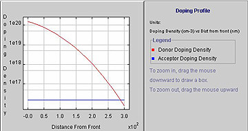

Doping Profile – diffused emitter
There are a couple of approaches for determining the doping profile in silicon. One relies on taking capacitance readings as a function of voltage while progressively etching away more of the silicon to expose the underlying regions. The capacitance of the junction in silicon is a function of the doping concentration and the voltage across the junction, which in combination determine the dimensions of the depletion region and therefore the capacitance. Only active dopants in the silicon contribute to the capacitance values such that non-active dopants are not recognised by this technique.
In comparison, Secondary Ion Mass Spectrometry (SIMS) analysis determines the total dopant concentration regardless of whether they are at interstitial sites. Again an etching technique (often ion beam sputtering) is used to remove the surface material for analysis to determine the doping concentration corresponding to the particular depth of material. As the etching penetrates deeper, the doping profile is determined. This etching takes place over a reasonably large cross-sectional area making the technique less effective for roughened or textured surfaces or with devices with non-uniform properties laterally.
| An example of a phosphorus doping profile in silicon is shown to the right. |  |